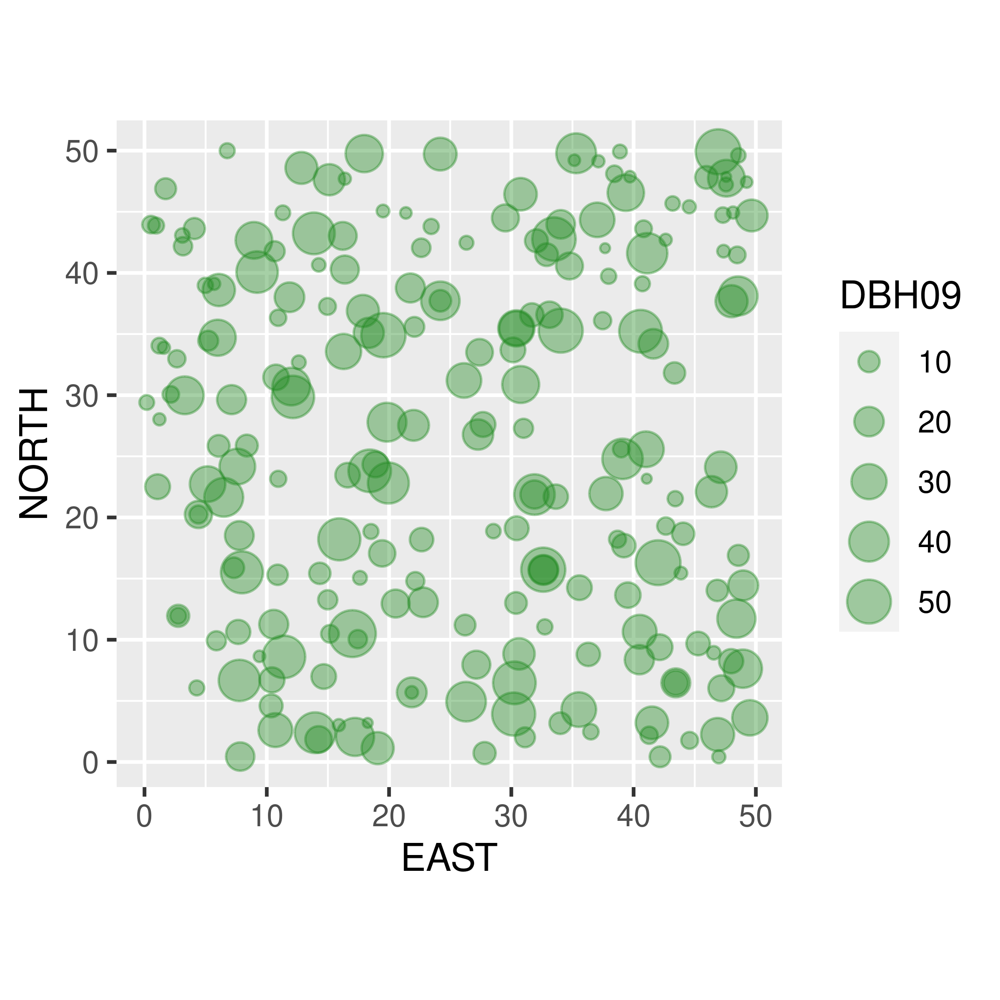

3 Why do we need special statistics?
“Classical” statistics were built around controlled experiments (historically: agricultural! and beer brewing!) where the inference relies on models where the response is one-dimensional, independent and identically distributed, and sampled with some design which maps directly onto a specific hypothesis. Thus, we are used to stats that look something like this:
Here the question is straightforward: how does diet affect chick weight? The chicks were presumably randomized, the experiment was presumably controlled (i.e. the experience of the chicks nearly identical, save for the diet variable), and the outcome (weight) measured. The process is modeled straightforwardly as:
\[M1: Y_{ij} = \alpha_i + \epsilon_{ij}\]
where i indexes the diet, \(\alpha_i\) is the diet-specific mean, and \(\epsilon_{ij}\) is the individual piece of unexplained variation. The question here is straightforward: Do differnet diets have different effects on chick growth?, and is answered - essentially - by comparing the likelihood of this model to a model where the diet effect (\(\alpha\)) is the same:
\[M0: Y_{ij} = \alpha + \epsilon_{ij}\]
Applying the most typical tools for this inference (ANOVA, Likelihood Ratio tests, or AIC - all of which are in fact are very nearly the same thing in this context) requires several assumptions: independence (here, easily satisfied) among observations, homoskedasticity - i.e. homogeneity of the magnitude of the unexplained variation (usually easy to satisfy, in a pinch, with some transformation, and also often not too troublesome), and some tractable assumption about the probabilistic distribution of that variation, very often assumed to be Gaussian, or “normal”.
The analysis of spatial data (broadly) and movement data (more specifically) are unique in a several important ways. As in any analysis, the particular tools that are applied to model and make inferences on spatial and movement data depend very much on the question being asked. But in almost all cases, none of the assumptions above hold.
First, unlike the weights of the chicks, the data are - by definition - multi-dimensional, containing at least coordinates in X, in Y and (in the case of movement) Time. It is therefore important to master the art of manipulating two-dimensional vectors, in particular with the remarkably convenient (and simple!) trick of working with Complex Numbers.
Second, spatial and movement data are - nearly always - non-independent. Locations in space that are closer will, typically, be more similar than points far away. Similarly, locations - or movement characteristics - that are closer to each other in time are more likely to be similar in certain ways than locations that are further away in time within a single track. We therefore need to deal with Dependent Data
Third, the some of the distributions that we work with are distinctly non-normal … flesh out.
Fourth, there is often considerable intrinsic structure - both in spatial and movement data, such that
3.1 Spatial data
Spatial data is simply data that contains spatial coordinates - in practice, we are almost always only concerned with two dimensions (\({\bf X, Y}\)) with perhaps a set of additional observations \(A\).1. Spatial data may represent a complete set of observations, for example it can represent the locations of all trees of a certain size in a given study plot. Often in such cases there are questions that can be asked about the generating process which determines the distribution of those locations. When describing a process, the coordinates themselves and alone can be considered a “response”. For example, a typical question might be: are the trees clustered, inhibiting each other, or randomly distributed? This is referred to as analyzing a point process (see Chapter XX).
1 We use boldfacing to indicate vectors (e.g. of length \(n\)), and capitals to indicate matrices such that \(A\) is a \(n \times k\) matrix for \(k\) observations.

Alternatively, spatial data can be considered a sampling of a continuous spatial structure. For example, we might measure a set of soil properties (pH, saility, moisture, thickness) over a study area, and have some questions about why the soil is structured the way it is. In those cases, the spatial coordinates are not of intrinsic interest (they were established by the reserach), but more similar to a “nuisance” parameter. To make sure that any inference we make on those data is “correct”, i.e. not unduly influenced by that autocorrelation, we have to take that autocorrelation into account. On the other hand, the scale of spatial autocorrelation of a process can itself be a variable of interest. Proper ways to do this is very much a central topic in spatial ecology as well (Chapter XX).
3.2 Movement data
Movement data - representing a measured sequence of locations for an individual organism - can be thought of as spatial data that is indexed in time, or - equivalently - as a two-dimensional time-series.
one-dimensional: Multi-Dimensional! (X,Y,Time) > Solution: get comfortable with complex numbers.independent: Highly dependent! > Solution: get comfortable with correlated / dependent data .identically distributed!: Complex and heterogeneous! > Solution: behavioral change point analysis / segmentation, hidden markov models.often normal: Circular and skewed distributions! > Solution: Flexible Likelihood-based modelling,randomly/uniformly sampled: Gappy / irregular / oddly duty-cycled data > Solution: Continuous movement modeling.